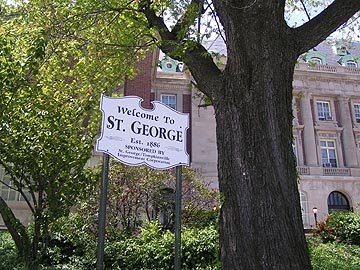

Staten Island is one of the five boroughs of New York City, in the U.S. state of New York. In the southwest of the city, Staten Island is the southernmost part of both the city and state of New York, with Conference House Park at the southern tip of the island and the state.The borough is separated from New Jersey by the Arthur Kill and the Kill Van Kull, and from the rest of New York by New York Bay. Staten Island is home to a large and diverse population of wildlife. Wildlife found on Staten Island include white tailed deer, hundreds of species of birds including turkey, hawks, egrets and ring-necked pheasants. Staten Island is also home to horseshoe crabs, cotton tailed rabbits, opossums, raccoons, garter snakes, red-eared slider turtles, newts, spring peeper frogs, leopard frogs, fox, box turtles, northern snapping turtles and common snapping turtles.Staten Island includes thousands of acres of federal, state, and local park land including the "greenbelt" and "blue belt" park systems and the Gateway National Recreation Area in addition to hundreds of acres of private wooded areas.The parks on Staten Island are managed by various state, federal and local agencies. The 625 ft (191 m) New York Wheel, which could become the world's tallest Ferris wheel, is to be constructed in the St. George neighborhood, alongside the planned Empire Outlets retail complex. First reported in June 2012 and officially announced by mayor Michael Bloomberg in September 2012, construction was originally expected to begin early in 2014. Completion was originally expected to be in 2015, but this has since been put back several times. In April 2013 it was reported to be July 4, 2016.Staten Island is known as the bourough of parks because of its numerous parks, some well known parks are Clove Lakes, Silver Lake, Greenbelt and High Rock. A great sight to see gorgeous points of Staten Island is Moses mountain which was a mountain where Robert Moses wanted to build a highway through but protests retracted this arrangement and now is a key point of Staten Island for tourists. Staten Island is currently building one of the worlds largest ferris wheels as well as many stores by the Staten Island Ferry.